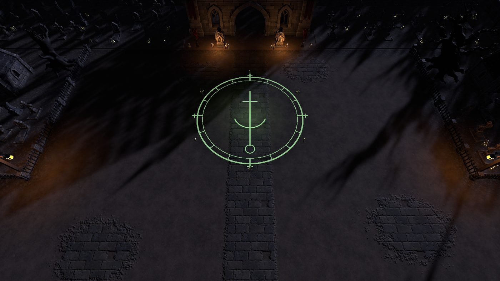
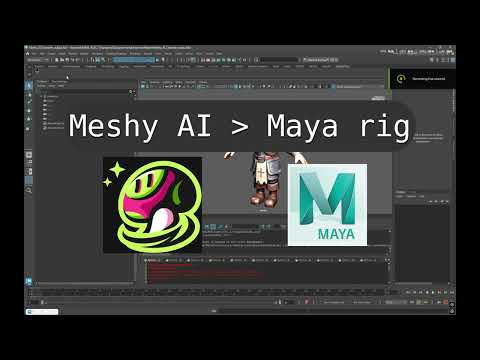

Blog
Notes, experiments, pipeline work, and project breakdowns — plus a devlog on the indie game I'm building.

GAME DEV JOURNEY / DEVLOG #1
Meshy to Blender to Unity: Building a Level Art Pipeline
How a level for my co-op dungeon game goes from one reference image to a playable Unity scene: Meshy models, real-world scale, seamless floors, and a layout built from code.
Read post →
TOOLS / MAYA / PYTHON
Paladin Auto-Rig for Maya: Turn Meshy AI Characters into Game-Ready Rigs in Seconds
A Python tool that takes a Meshy AI character on a Mixamo-style skeleton and builds a full production rig automatically.
Read post →